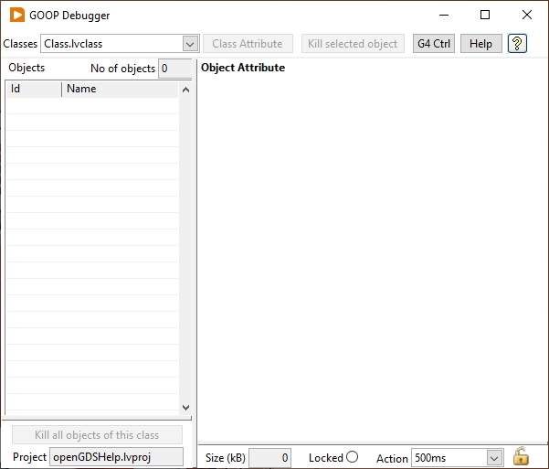

Right click on an lvclass in the project explorer tree and select GOOP>>Object Debugger or use the Tools menu and select GOOP>>Debuggers.
This tool allows you to monitor the objects created from GOOP 3/4 and OpenG class templates. Standard LV classes are debugged using standard LabVIEW Probes on the wire.
Note. The debugger will only find objects executing on the local target. Therefore it will not work if you run code on RT target.
Dialog Box Options|
Project |
Select the project to debug. |
|
Classes |
Select the class to debug. |
|
Class/Object Attribute |
Select if class or the object attributes shall be shown in the Object Attribute window. Only GOOP 3 supports class attributes. |
|
Objects |
Lists existing objects for the current class. Select an object to view its data. |
|
Kill selected object |
Kills the object selected in the objects display. Note, this feature removes the memory for the object, it does not run the Destroy method. |
|
Kill all objects |
Kills all objects shown in the objects display. |
|
Size (KB) |
Shows the size of the object. |
|
Action |
Select update frequency for the attributes in the debugger window. You can change the value of an attribute by selecting modify and update attribute. |

Video link: